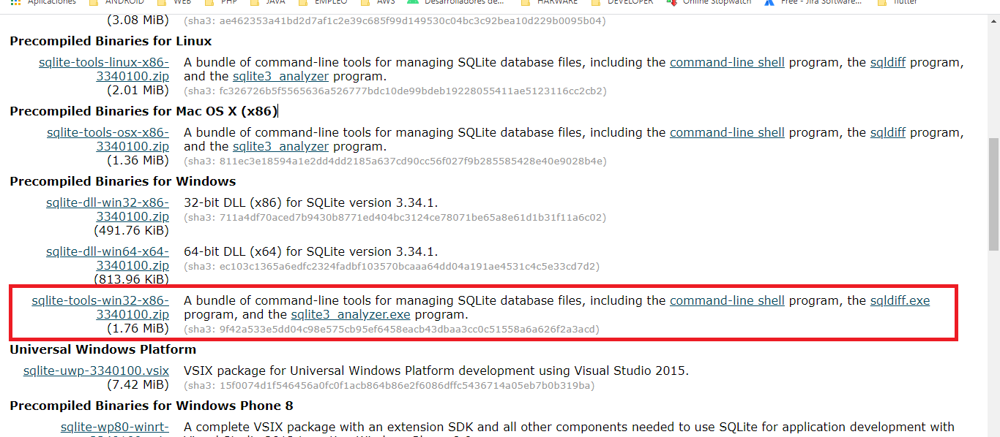
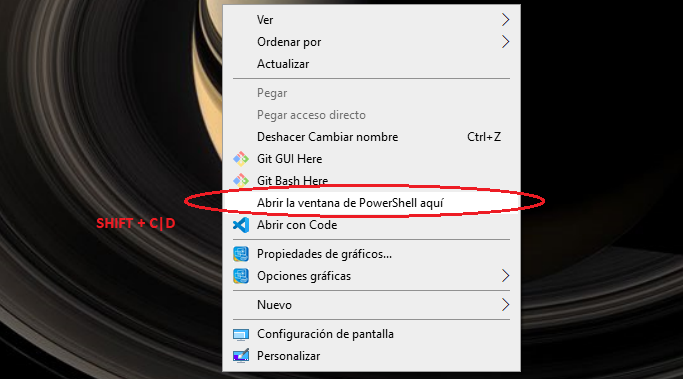
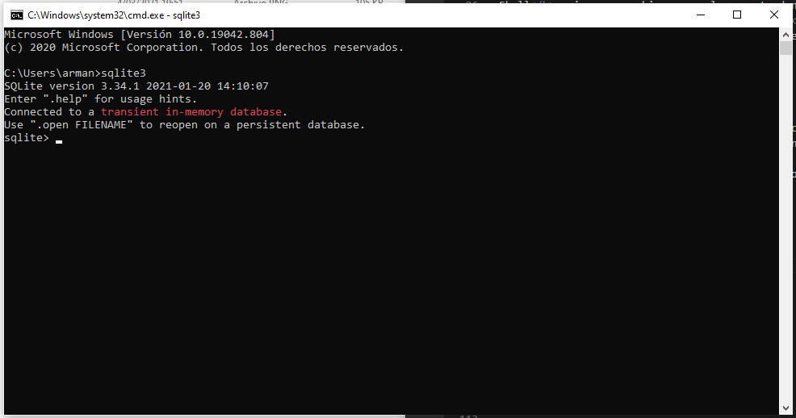

SQLite
Instalar tools
en Windows
Se debe descargar la carpeta de instalacion sqlite-tool-win32-x86 que se encuentra en el apartado Precompiled Binaries for Windows, teniendo presente que el archivo dice: tools y lo descomprimimos dentro de una carpeta en donde se generaran tres archivos.
Para ejecutar los archivos, tenemos que abrir la consola de window, mediante shift + C|D, seleccionamos la opcion de abrir ventana de PowerShell aqui

en la ventana de PowerShell primero nos ubicamos en la carpeta donde se encuentran nuestros archivos,
utilizando los comandos ls, cd; o pondemos hacer la apertura del powerShell desde la carpeta.
ya estando alli ubicados, escribimos .\sqlite3, a lo cual, aparece la version del software y otros mensajes
Para tener acceso a la carpeta desde cualquier lugar del pc, creamos una carpeta en Disco local(C:), en este caso
llamamos src, en ella pegamos la carpeta que contiene los tres archivos, copiamos la direccion: C:\src\sqlite-tools-win32-x86-3340100
luego vamos a Este Equipo / propiedades y en configuracion avanzada del sistema en Opciones avanzada /variables de entorno, damos doble click
en la palabra Path que se encuentra en un listado de variables; a lo cual se abre una nueva ventana.
damo click en el boton nuevo, se abre un espacio en el listado, donde pegamos la direccion que teniamos y luego damos en aceptar en todo.
ahora si abrimos la consola de systema windows + r : cmd y escrimos el comando sqlite3 ya tenemos acceso al software
Configurar claves de acceso
Se abre la consola de IAM/Users(usuarios)/ selecciona tu nombre de
usuario /Segurity credencial(credenciales de seguridad)/Create Access key
Para descargar el par de claves se elije Download csv file

El siguiente vinculo (Código de colores) nos direcciona a android-codelab, en donde encontramos el recurso para copiar y pegar en el archivo colors.xml
Codigo de colores →Terminal windows y version java
Para abrir el termina se debe hacer la combinacion de teclas Windows + r y parece la ventana ejecutar, en donde escribios cmd y damos a enter

Para saber la version de java indicamos: java -version